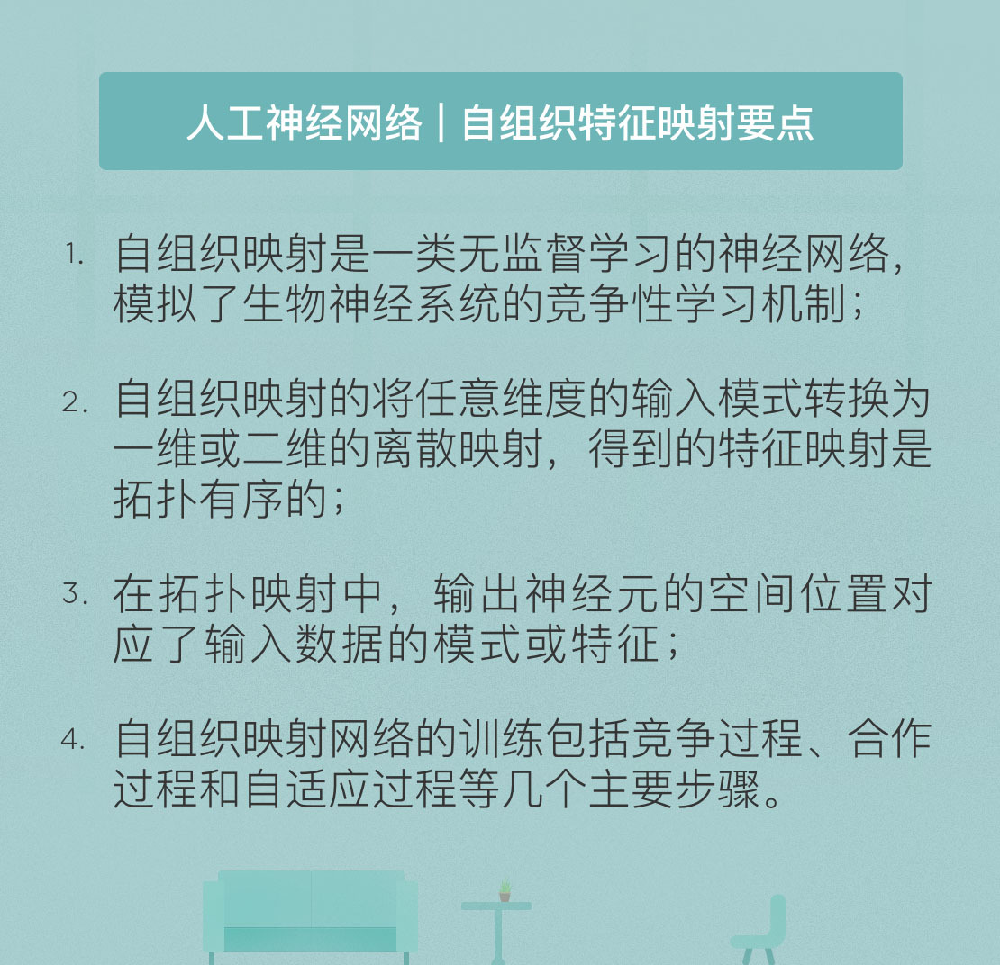

- 00 开篇词 人工智能：新时代的必修课.md
- 01 数学基础 九层之台，起于累土：线性代数.md
- 02 数学基础 月有阴晴圆缺，此事古难全：概率论.md
- 03 数学基础 窥一斑而知全豹：数理统计.md
- 04 数学基础 不畏浮云遮望眼：最优化方法.md
- 05 数学基础 万物皆数，信息亦然：信息论.md
- 06 数学基础 明日黄花迹难寻：形式逻辑.md
- 07 机器学习 数山有路，学海无涯：机器学习概论.md
- 08 机器学习 简约而不简单：线性回归.md
- 09 机器学习 大道至简：朴素贝叶斯方法.md
- 10 机器学习 衍化至繁：逻辑回归.md
- 11 机器学习 步步为营，有章可循：决策树.md
- 12 机器学习 穷则变，变则通：支持向量机.md
- 13 机器学习 三个臭皮匠，赛过诸葛亮：集成学习.md
- 14 机器学习 物以类聚，人以群分：聚类分析.md
- 15 机器学习 好钢用在刀刃上：降维学习.md
- 16 人工神经网络 道法自然，久藏玄冥：神经网络的生理学背景.md
- 17 人工神经网络 一个青年才俊的意外死亡：神经元与感知器.md
- 18 人工神经网络 左手信号，右手误差：多层感知器.md
- 19 人工神经网络 各人自扫门前雪：径向基函数神经网络.md
- 20 人工神经网络 看不见的手：自组织特征映射.md
- 21 人工神经网络 水无至清，人莫至察：模糊神经网络.md
- 22 深度学习 空山鸣响，静水流深：深度学习概述.md
- 23 深度学习 前方有路，未来可期：深度前馈网络.md
- 24 深度学习 小树不修不直溜：深度学习中的正则化.md
- 25 深度学习 玉不琢不成器：深度学习中的优化.md
- 26 深度学习 空竹里的秘密：自编码器.md
- 27 深度学习 困知勉行者勇：深度强化学习.md
- 28 深度学习框架下的神经网络 枯木逢春：深度信念网络.md
- 29 深度学习框架下的神经网络 见微知著：卷积神经网络.md
- 30 深度学习框架下的神经网络 昨日重现：循环神经网络.md
- 31 深度学习框架下的神经网络 左右互搏：生成式对抗网络.md
- 32 深度学习框架下的神经网络 三重门：长短期记忆网络.md
- 33 深度学习之外的人工智能 一图胜千言：概率图模型.md
- 34 深度学习之外的人工智能 乌合之众的逆袭：集群智能.md
- 35 深度学习之外的人工智能 授人以鱼不如授人以渔：迁移学习.md
- 36 深度学习之外的人工智能 滴水藏海：知识图谱.md
- 37 应用场景 你是我的眼：计算机视觉.md
- 38 应用场景 嘿, Siri：语音处理.md
- 39 应用场景 心有灵犀一点通：对话系统.md
- 40 应用场景 数字巴别塔：机器翻译.md
- 一键到达 人工神经网络复习课.md
- 一键到达 应用场景复习课.md
- 一键到达 数学基础复习课.md
- 一键到达 机器学习复习课.md
- 一键到达 深度学习之外的人工智能复习课.md
- 一键到达 深度学习复习课.md
- 一键到达 深度学习框架下的神经网络复习课.md
- 推荐阅读 我与人工智能的故事.md
- 新书 《裂变：秒懂人工智能的基础课》.md
- 直播回顾 机器学习必备的数学基础.md
- 第2季回归 这次我们来聊聊机器学习.md
- 结课 溯洄从之，道阻且长.md
- 课外谈 “人工智能基础课”之二三闲话.md
- （课外辅导）人工神经网络 拓展阅读参考书.md
- （课外辅导）数学基础 拓展阅读参考书.md
- （课外辅导）机器学习 拓展阅读参考书.md
- （课外辅导）深度学习 拓展阅读参考书.md
20 人工神经网络 看不见的手：自组织特征映射
无论是全局逼近的多层感知器，还是局部逼近的径向基网络，在训练中用到的都是监督学习的方法。如果将无监督学习引入神经网络中，对应的结构就是自组织特征映射（Self-Organizing Map），这是芬兰赫尔辛基大学的泰乌沃·柯霍宁于1981年提出的一类神经网络。
相比于前面介绍的神经网络，自组织映射有两个明显的不同。
第一，它能够将高维的输入数据映射到低维空间之上（通常是二维空间），因而起到降维的作用。在降维的同时，自组织映射妙就妙在还能维持数据在高维空间上的原始拓扑，将高维空间中相似的样本点映射到网络输出层的邻近神经元上，从而保留输入数据的结构化特征。
第二，自组织映射采用的是竞争性学习而非传统的纠错学习。在竞争性学习中，对输入样本产生响应的权利并不取决于预设的权重系数，而是由各个神经元相互竞争得到的。不断竞争的过程就是网络中不同神经元的作用不断专门化的过程。
竞争性学习的理念来自于神经科学的研究。在生物的神经系统中存在着一种名叫“侧向抑制”的效应，它描述的是兴奋的神经元会降低相邻神经元活性的现象。侧向抑制能够阻止从侧向刺激兴奋神经元到邻近神经元的动作电位的传播。什么意思呢？当某个神经元受到刺激而产生兴奋时，再刺激相近的神经元，则后者的兴奋对前者就会产生抑制作用。这种抑制作用会使神经元之间出现竞争，在竞争中胜出的神经元就可以“胜者通吃”，将竞争失败的神经元全部抑制掉。
自组织映射中的竞争性学习模拟的就是上述的侧向抑制机制。自组织映射的拓扑结构并非如多层感知器般的层次结构，而是一张一维或者二维的网格，网格中的每个节点都代表一个神经元，神经元的权重系数则是和输入数据的维度相同的向量。在拓扑结构中，每个神经元的位置都不是随意选取的，而是和功能有着直接的关系。距离较近的神经元能够处理模式相似的数据，距离较远的神经元处理对象的差异也会很大。
由于神经元在网格中的位置至关重要，因而训练过程就是在空间上对神经元进行有序排列的过程。自组织映射为神经元建立起一个坐标系，由于每个网格神经元对应一类特定的输入模式，输入模式的内在统计特征就是通过神经元的坐标来表示的。
因此，自组织映射的主要任务就是将任意维度的输入模式转换为一维或二维的离散映射，并以拓扑有序的方式自适应地实现这个映射。在训练过程中，自组织映射中每个神经元的权重系数首先要初始化，初始化的方式通常是将其赋值为较小的随机数，这可以保证不引入无关的先验信息。当初始化完成后，网络的训练就包括以下三个主要过程。
竞争过程：对每个输入模式，网络中的神经元都计算其判别函数的取值，判别函数值最大的神经元成为竞争过程的优胜者；
合作过程：获胜神经元决定兴奋神经元的拓扑邻域的空间位置；
自适应过程：兴奋神经元适当调节其权重系数，以增加它们对于当前输入模式的判别函数值，强化未来对类似输入模式的响应。
竞争过程的实质是找到输入模式和神经元之间的最佳匹配。由于输入模式\(\\mathbf{x}\)和权重系数\(\\mathbf{w}\)是具有相同维度的向量， 因而可以计算两者的内积作为判别函数。在线性代数中我曾提到，内积表示的是向量之间的关系，两个归一化向量的相关度越高，其内积也就越大。因而通过选择具有最大内积\(\\mathbf{w}_j^T \\mathbf{x}\)的神经元，就可以决定兴奋神经元拓扑邻域的中心位置。
两个向量的内积越大，它们之间的欧氏距离就越小，因而内积最大化的匹配准则等效于欧氏距离最小化。从这个角度看，获胜神经元就是对输入模式的最佳匹配。
竞争过程确定了合作神经元的拓扑邻域的中心，合作过程就要界定中心之外的拓扑邻域。借鉴侧向抑制效应，自组织映射中的拓扑邻域被定义成以最佳匹配神经元和兴奋神经元之间的侧向距离为自变量的单峰函数。由于神经元在传导时倾向于激活距离较近的神经元，因而拓扑邻域的幅度在距离为0的中心点取到最大值，并随着侧向距离的增加而单调衰减。同时，拓扑邻域还应该满足平移不变性，也就是邻域幅度不依赖于中心点的位置。
除了单峰值和平移不变性之外，自组织映射中的拓扑邻域还有另一个特点，就是其大小会随着时间的推移而收缩，也就是幅度值随着时间的增加而下降。这个时变性质的意义在于逐渐减少需要更新的神经元的数量。
网络的自组织特性要求神经元的权重系数具备自动调节的功能。权重系数的整体变化趋势是向数据靠拢，因而其分布也将趋于输入模式的分布。权重系数的更新方程如下所示
\[ \\mathbf{w}_j(n + 1) = \]
\[\\mathbf{w}_j(n) + \\eta (n) h_{j, i(\\mathbf{x})} (n) \[\\mathbf{x}(n) - \\mathbf{w}_j(n)\] \]
式中的\(\\eta (n)\)是随时间增加而下降的学习率参数，\(h_{j, i(\\mathbf{x})} (n)\)则是拓扑邻域函数。
因而，自适应过程可以分为两个阶段。第一阶段是排序阶段，权重系数的拓扑排序在这个阶段形成；第二阶段是收敛阶段，通过微调特征映射实现对输入模式的精确描述。只要算法的参数没有问题，自组织映射就能将完全无序的初始状态按照输入模式以有组织的方式重构，这也是“自组织”的含义。
由于自组织映射采用的是迭代的训练方法，初始值的好坏便至关重要。传统算法采用的是随机方式的初始化，后来又提出了基于主成分的初始化方法。事实上，初始化方法的性能取决于输入数据集的几何形状。如果数据集在主成分上的投影是线性的，就应该选择主成分初始化。可对于非线性数据集而言，随机初始化反而是最优选择。
综合起来，自组织映射的训练算法可以归纳为以下几个步骤：
- 使用主成分法或随机法初始化神经元的权重系数；
- 选取训练集中的样本用于激活整个网络；
- 根据最小距离准则寻找最佳匹配神经元；
- 通过更新方程调整所有神经元的权重系数；
- 重复以上步骤直到在从输入模式到神经元的映射关系中观察不到明显变化。
从输入模式到神经元的映射关系被称为特征映射，它具有很多良好的性质。由于权重系数的维度会远远小于输入数据的可能数目，因而特征映射可以对输入空间提供一个良好的近似，起到数据压缩的作用。
从这个角度理解，自组织映射可以看成是一个编码器-解码器模型：寻找最佳匹配神经元就是对输入模式进行编码，确定权重系数则是对编码结果进行解码，邻域函数则可以表示对编解码过程造成干扰的噪声的概率密度。自组织映射的这个性质与信息论中用于数据压缩的向量量化方法不谋而合。
当算法收敛后，特征映射就能够表示出输入模式的统计特性。如果输入空间上的某些数据出现的概率较高，它们就会被映射到输出空间中更大的区域上，也就会涵盖更多的神经元。但这个趋势只有定性的意义，自组织映射不能给出输入数据固有概率分布的精确表示，因而不具备定量描述的能力。虽然不能定量描述固有分布，但自组织映射依然能够选择出一组最优的特征，使这组特征在逼近固有分布时具有最佳的效果。
自组织映射通过以无监督方式训练大量数据实现特征映射，以实现不同类型数据的区分。其简便易行的特性和强大的可视化能力使它在不少需要大规模数据训练的应用中得到使用。自组织映射一个典型的应用是在图像处理中检测和描述语义目标和目标类之间的存在关系，以及自然语言中单词的语义规则。
今天我和你分享了自组织特征映射的基本原理，其要点如下：
- 自组织映射是一类无监督学习的神经网络，模拟了生物神经系统的竞争性学习机制；
- 自组织映射能将任意维度的输入模式转换为一维或二维的离散映射，得到的特征映射是拓扑有序的；
- 在拓扑映射中，输出神经元的空间位置对应了输入数据的模式或特征；
- 自组织映射网络的训练包括竞争过程、合作过程和自适应过程等几个主要步骤。
自组织映射具有通过时间上的演化在无序中产生有序的内在能力，这与目前同样火热的非线性科学与复杂系统的研究有几分神似。那么关于复杂性的研究能否应用于人工智能之中呢？
欢迎发表你的观点。

© 2019 - 2023 Liangliang Lee. Powered by gin and hexo-theme-book.